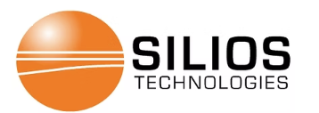
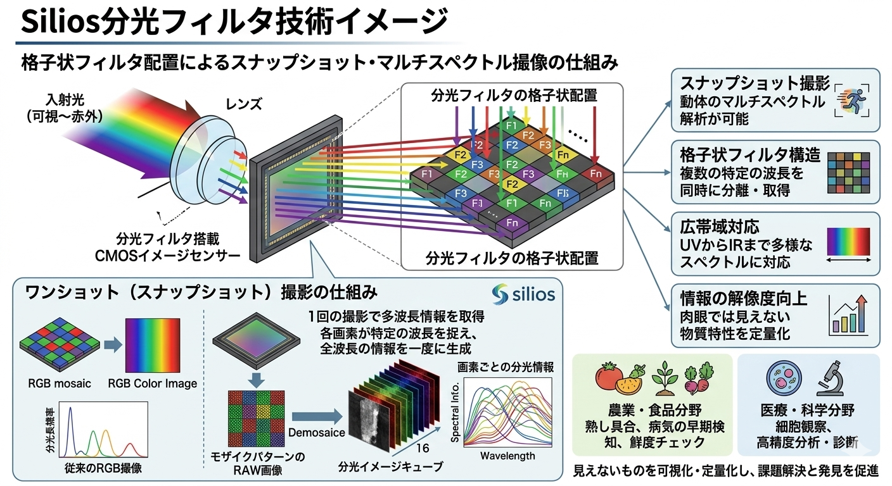
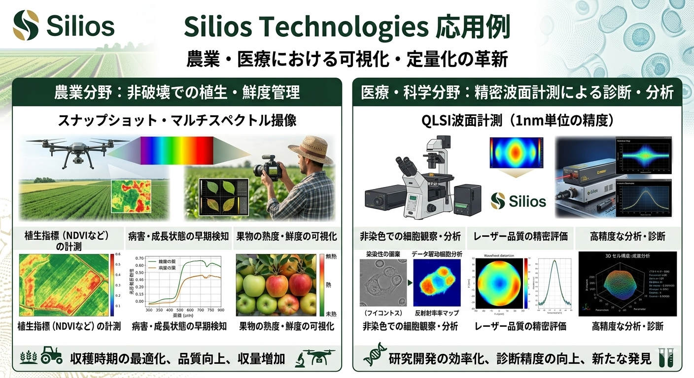

RGBカメラによる外観検査はコモディティ化し、次なる主戦場は「成分」を識別するマルチスペクトル技術へと移っています。表面情報だけでなく「中身」を可視化する技術が、製造・農業・医療のDXを劇的に進化させます。
標準的なCMOSカメラ技術は完成度に達しましたが、市場は今「形を見る」から「性質を見抜く」段階へシフトしています。従来のRGB（3波長）では困難な、酷似した物質の識別が自動化のボトルネックとなっています。
自動化ライン導入後も、最終選別を人手に頼る現場は少なくありません。入力データが「表面の色」に限定されている限り、AIを強化しても論理的な限界に突き当たります。

CORE TECHNOLOGY

フランスのSiliosは、センサー上に分光フィルタを格子状に配置する独自技術で、「スナップショット・マルチスペクトル」を実現。動体に対しても多波長情報を一瞬で取得可能です。
光の面の歪みを1nm精度で数値化。光学系の品質評価や非染色細胞の観察において決定的なデータを提供します。
APPLICATIONS
細胞を染色することなく構造を観察し、研究効率を飛躍的に向上させます。また、レーザー品質の精密評価など、極限の精度が求められる現場で採用されています。
鮮度や糖度を「非破壊」で瞬時に判定。外観の変化が出る前に病気を検知し、歩留まりを最大化します。

FUTURE OUTLOOK